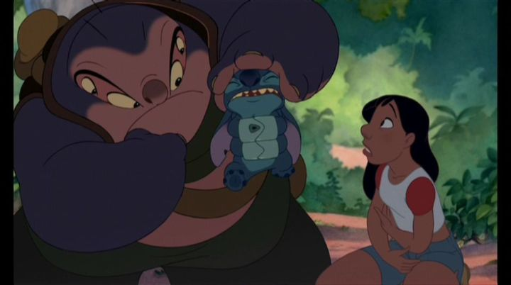

As a kid, "Lilo & Stitch" was not one of my favorite Disney movies. But I admit the marketing campaign was fantastic at the time. The premise involves a blue-alien with a penchant for destroying everything being adopted as a dog, and the teaser trailers involved the ugly-cute alien monster breaking into famous scenes from other Disney movies, such as "Aladdin," "Beauty and the Beast" and "The Lion King." In the Disney universe, Stitch was the trouble-making misfit everyone pointed fingers to, and as the tagline went, "there's one in every family." The opening sequence is one of the best examples of science-fiction Disney's produced. An alien federation is holding the mad scientist Jumba on trial for genetically creating Experiment 626 (who we later know as Stitch), a creature/weapon whose only purpose and talent is to destroy and create havoc. 626 escapes capture, steals a ship, and manages to escape to a desolete planet known as... "E-arth," crash landing onto a small island. The sole expert of the planet among the aliens insists they can't simply attack it ("the human race is delicate, and mosquitos are an endangered species!" Agent Pleakley explains), so Pleakley and Jumba are sent on a covert operation to capture 626 without sending the human species into panic. What mysterious lands would they find the blue menance on?... and that's when we get serene opening credits of the beauty of modern-day Hawaii. It's a disappointing tonal shift. It works well, sure, but I'd prefer to see the galactic action. Anyway, Lilo is the second protagonist of the movie, a cute but dysfunctional child, frequently creating stories that explain her odd behavior and getting into fights. She lives alone with an older sister, Nani, after their parents died in an accident, and their loving but dysfunctional relatonship puts them in frequent trouble with child-services, most recently a large man (that may or may not have worked for the CIA) named Mr. Bubbles, giving them only a few days to prove themselves or else have Lilo taken away. As a last-chance effort, Nani lets Lilo adopt a dog to help with her trouble making friends, and there she finds 626, a confused but crafty dog-like creature that was run over by a truck the previous night. She names him Stitch, and insists that he's the dog she wants. The rest of the movie centers around Lilo trying to train Stitch, while Stitch tries to find a way off the island to let out his wrecking tendancies on a large city, all while Nani tries to straighten out her job and house, and Jumba waits in the background for his chance to nab Stitch. "Lilo & Stitch" is a spiritual successor to "The Emperor's New Groove," in that they break a lot of traditional Disney rules and prove that the company can make some very funny movies. Some of that humor is from the aliens (Jumba's mad-scientist personality in particular), but mostly from the humans that over-react when they see Stitch for the first time. There are a lot of laugh-out loud moments. But the core of the story is an emotional one, best summarized but the frequently-used word "ohana," a Hawaiian word for family. No matter how Stitch behaves, Lilo (and usually, only Lilo) doesn't want to give up on him, just as Nani doesn't want to give up on Lilo. Stitch slowly comes to understand the meaning of family, and wants to be a part of one, even though he understands he's made things worse for Lilo in the long run.  That's a pretty grim tone to set, and it might be triggering to see a child threatened to be taken away from her family in a Disney movie. It's remarkable that the wildly different tones of the movie work together as well as they do. But they comedy and the setting didn't jive as well with me, overstaying its welcome before the movie was halfway through. That's just personal preference, and I can imagine the movie being a hit with mothers and daughters with tense relationships. The franchise proved to be one of the most popular for Disney since "The Lion King," spawning home-video-sequels, television shows and comics. Stitch was especially popular in Japan and China, apparently, getting content specifically for those markets. The visual style relies on a lot of rounded faces and bodies, with noses in particularly looking different than other Disney films. It's original, but your appreciation of the style will vary. The small town on Hawaii is well-painted, but it's clear that this was a lower-budget film for Disney, relying more on its style. Elvis Presley's music is heavily used, alongside a couple traditional island tunes, to portray the setting. The voice actor cast feels natural, but has virtually no A-level actors compared to Disney's other recent movies. Fun fact: one of the co-directors, Chris Sanders, plays the now-iconic voice of Stitch in the movie. "Lilo & Stitch" nails the humor and heartfelt messaging, and is an easy movie to recommend from the 2000's decade. It just isn't a personal favorite of mine compared to the grander achievements in other Disney movies.
- "Ani" More reviews can be found at : https://2danicritic.github.io/ Previous review: review_Like_The_Clouds,_Like_The_Wind Next review: review_Little_Vampire